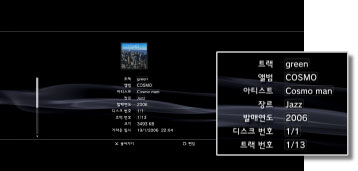

음악 > 음악 CD 정보 취득/편집하기
음악 CD 정보 취득/편집하기
음악 CD 정보 취득하기
음악 CD를 넣으면 인터넷에 자동으로 접속하여 CD 정보를 가져옵니다. CD 정보를 가져오려면 먼저 화면에 표시되는 이용약관에 동의해야 합니다.
알아두기
- 옵션 메뉴에서 CD 정보를 얻을 수도 있습니다. 음악 CD 아이콘이 선택된 상태에서
 버튼을 누른 후 [CD 정보 취득]을 선택합니다. 화면의 지시에 따라 조작해 주십시오.
버튼을 누른 후 [CD 정보 취득]을 선택합니다. 화면의 지시에 따라 조작해 주십시오. - CD 정보를 얻지 못한 경우 CD를 넣어도 앨범 정보와 트랙명이 표시되지 않습니다.
음악 CD 정보 편집하기
취득한 CD 정보의 일부를 변경할 수 있습니다. 음악 CD 또는 트랙 아이콘을 선택한 상태에서 버튼을 누른 후 옵션 메뉴에서 [정보]를 선택합니다. 변경할 항목을 선택해 주십시오.

알아두기
- PS3™에서 자동으로 취득한 CD 정보가 올바르지 않으면 수정한 정보를 인터넷에서 All Media Guide사로 보낼 수도 있습니다. 음악 CD 아이콘을 선택하여 버튼을 누른 후 옵션 메뉴에서 [CD 정보 송신]을 선택합니다.
- All Media Guide사는 CD 정보의 데이터베이스를 제공하는 회사입니다.
- 정보를 송신할 때에는 [앨범], [아티스트], [장르]를 입력해야만 합니다.
- Super Audio CD의 CD 정보는 변경하거나 보낼 수 없습니다.
중요
Super Audio CD는 일부 PS3™에서는 재생할 수 없습니다. 상세한 사항은 [재생할 수 있는 디스크의 종류에 대하여]를 참조해 주십시오.